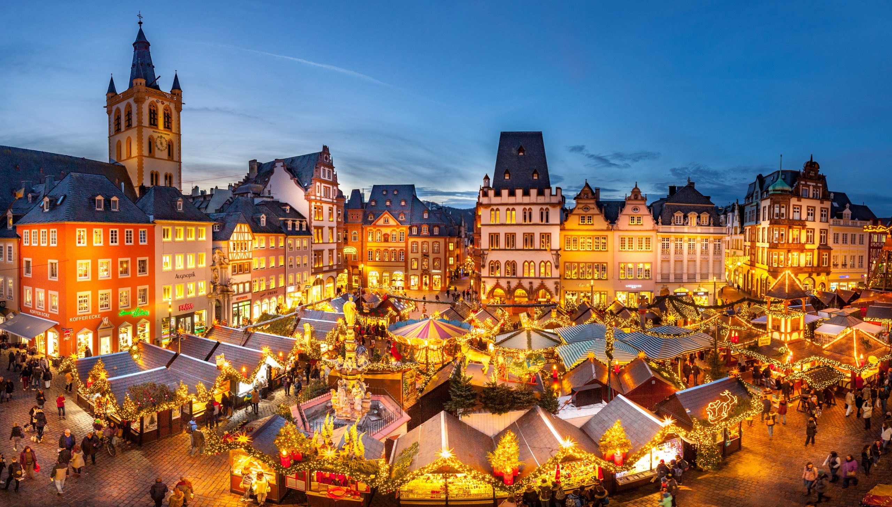
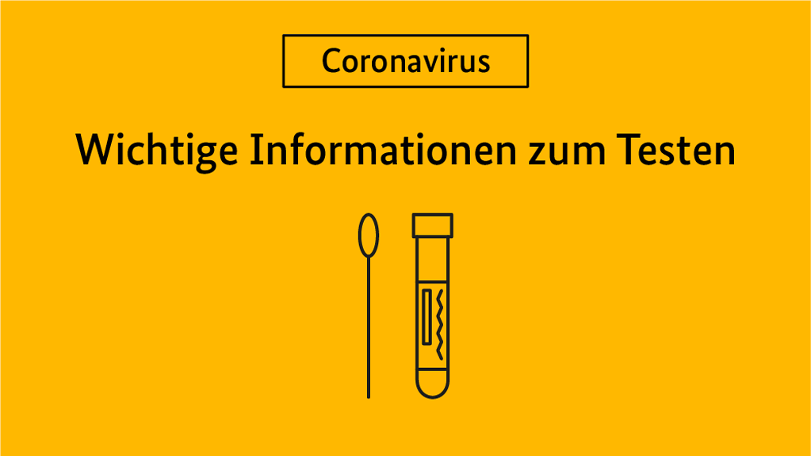

Weihnachtsmarkt
Die Vorfreude ist riesig: der Trierer Weihnachtsmarkt hat am Freitag, 18.11.2022 begonnen. Nach zweijährige Corona-Pause kehrt er beinahe im Normalzustand zurück,... weiterlesen

Corona Regelung
Corona ist noch nicht vorbei. Um unsere älteren Mitbürger zu schützen klären wir sie weiter auf. Bei Infektionssymptomen bleiben sie bitte Zuhause...weiterlesen